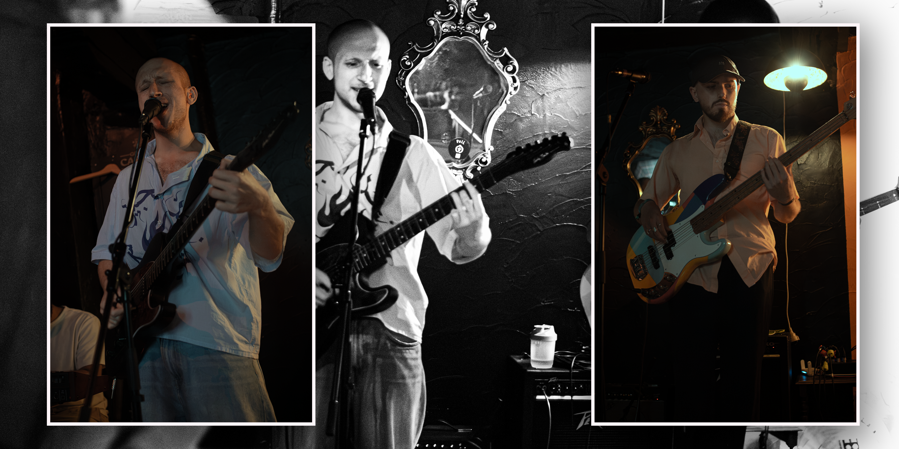
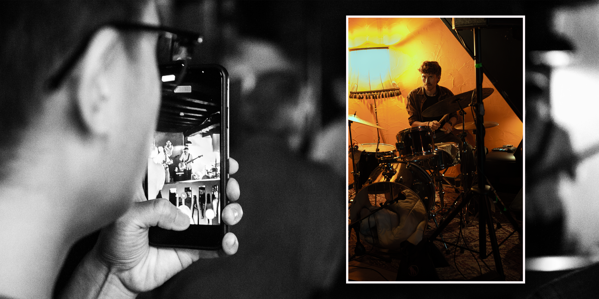
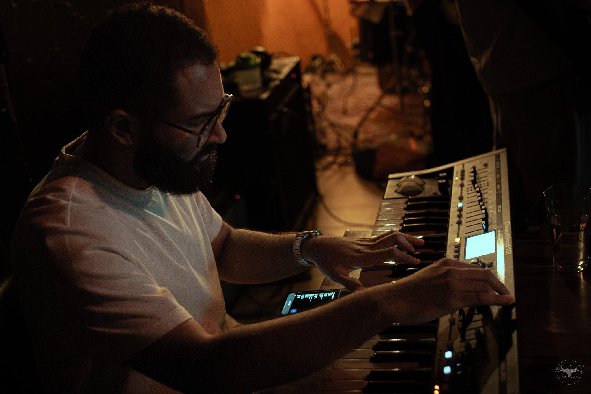

Press Photos






Alternative R&B / Soul / Funk - Antwerp
Sun-drenched emotion, warm textures and groove-driven storytelling.
Arrubio is a Moroccan indie artist based in Antwerp, blending alternative R&B, indie rock and soul into a warm, atmospheric sound.
His music is defined by rich synth textures, layered guitar work and a focus on emotion and mood.
Starting out with GarageBand at a young age, he developed a production style where instrumentation shapes feeling and space.
Together with his band, Arrubio delivers intimate yet energetic live performances.
3600+ streams
7000+ streams



Photography: Tijs Ketsman · Glenn Verberck
Lead Vocals + Electric Guitar
Drums
Bass + Backing Vocals
Keys
Full technical rider available upon request.